(М*(Ж-О))/(С-О)
М – молоко в килограммах Ж – жирность молока О – жирность обрата С – жирность сливок
Содержание сухих веществ в молоке определяют в лабораторных условиях путем выпаривания воды из навески молока при температуре 105 ºС. Значительно проще, быстрее и вместе с тем достаточно точно содержание сухого вещества в молоке и сухого обезжиренного молочного остатка (СОМО) можно рассчитать, используя следующие формулы:
а) содержание сухого вещества:
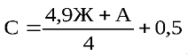б) содержание сухого обезжиренного молочного остатка
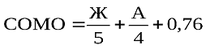где С – содержание сухого вещества в молоке, %; СОМО – содержание сухого обезжиренного молочного остатка, %; Ж – содержание жира, %; +А – плотность молока, ºА. При добавлении воды плотность, жирность, количество сухого вещества и СОМО понижаются. Установлено, что при снижении плотности на 3 ºА в молоко добавлено 10 % воды. Количество добавленной в молоко воды определяют по формуле:
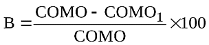где В – количество добавленной воды, %; СОМО – содержание сухого обезжиренного остатка в молоке стойловой пробы, %; СОМО1 – содержание сухого обезжиренного остатка в молоке проверяемой пробы, %. При разведении обезжиренным молоком или при снятии сливок плотность повышается, содержание жира и сухого вещества снижается, а содержание СОМО почти не изменяется. Степень фальсификации молока (%) добавлением обезжиренного молока или снятия сливок определяют по формуле:
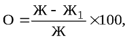где О – количество прибавленного обрата, %; Ж – жирность молока стойловой пробы, %; Ж1 – жирность молока проверяемой пробы, %. Для установления только характера фальсификации добавлением обезжиренного молока (снятия сливок) достаточно знать содержание жира и сухого вещества (СОМО + жир) в исследуемой пробе молока. При этом рассчитывают содержание жира в сухом веществе молока по формуле:
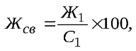где Жсв – содержание жира в сухом веществе, %; Ж1 – содержание жира в молоке исследуемой пробы, %; С1 – содержание сухого вещества в молоке исследуемой пробы, %. Если содержание жира в сухом веществе менее 25 %, то это указывает на добавление к молоку обезжиренного молока или подснятие сливок. При одновременном разбавлении молока водой и обезжиренным молоком (снятии сливок) плотность молока почти не изменяется или изменяется в зависимости от соотношения добавленных компонентов, содержание жира и сухого вещества заметно уменьшается при одновременном снижении СОМО Величину двойной фальсификации рассчитывают по следующим формулам:
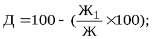 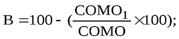 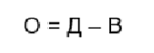где Д – общее количество добавленных воды и обрата, %. При расчетах между хозяйством и молочным заводом необходимо выражать количество молока в одних и тех же единицах измерения – в килограммах. Количество молока, выраженное в литрах, следует перевести в килограммы по следующей формуле:
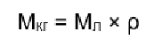Мл – количество молока, л; ρ – плотность молока, г/см3. Если плотность молока не известна, то можно использовать средний показатель плотности – 1,030 г/см3. Для определения количества молока, зачтенного при продаже его государству, рассчитывают количество молока базисной жирности. Для Республики Башкортостан базисная жирность молока равна 3,5 %. Расчет осуществляется по формуле
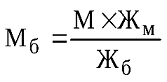где Мб – количество молока базисной жирности, кг; М – количество молока фактической жирности, кг; Жм – фактическая жирность молока, %; Жб – базисная жирность молока, %. За молоко базисной жирности производится оплата при продаже его государству. Товарность молока – это отношение количества проданного молока к надоенному, выраженное в процентах. Молоко, произведенное в хозяйстве, частично используется на выпойку телятам, продажу населению и прочие внутрихозяйственные нужды и поэтому его товарность ниже 100 %. Товарность молока рассчитывают по формуле:
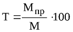где Т – товарность молока, %; М – количество надоенного молока фактической жирности, кг; Мпр – количество проданного молока фактической жирности, кг. Расчет используется как предварительный при расчете средней жирности молока надоенного (или проданного) за определенный промежуток времени и составлении жирового баланса. Расчет проводят по следующей формуле:
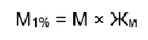где М1% – количество 1%-ного молока, кг; М – количество молока, кг; Жм – жирность молока, % Среднюю жирность молока, надоенного (или проданного) за определенный промежуток времени, определяют по формуле:
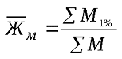где – средняя жирность надоенного (проданного) молока, %; ∑М1% – сумма 1 %-ного надоенного (проданного) молока, кг; ∑М – сумма надоенного (проданного) молока фактической жирности, кг. Жировой баланс составляют при сепарировании молока, производстве масла, наличии в хозяйстве центральной молочной:
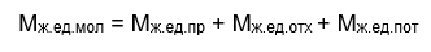где Мж.ед.мол – количество жировых единиц в молоке или другом исходном сырье; Мж.ед.пр – количество жировых единиц в продукте; Мж.ед.отх – количество жировых единиц в отходах; Мж.ед.пот – количество жировых единиц, потерянных в процессе производства.